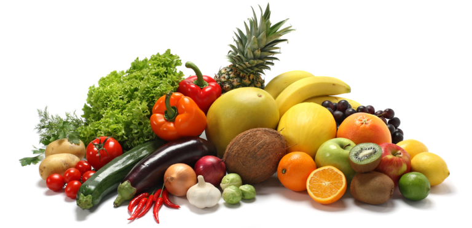

پیشنهاد ویژه
پیشنهاد ویژه✦ تجربهای فراتر از یک وعده غذایی
اشکان
طعم، هنر و مهماننوازی در یک میز
غذاهایی با الهام از آشپزی ایرانی و جهان، با مواد اولیه منتخب و ارائهای مدرن؛ برای شبی که قرار است به یاد بماند.
+۱۲سال تجربه
۴.۹/۵رضایت مهمانان
+۴۰آیتم منو



مواد اولیه منتخب
تازه، روزانه و با دقت انتخاب میشوند.
داستان ماجایی برای مزه کردن لحظهها
اشکان با یک ایده ساده شکل گرفت: غذای خوب فقط طعم نیست؛ بخشی از آن فضا، توجه و احساسی است که هنگام نشستن پشت میز تجربه میکنید.
منوی ما ترکیبی از طعمهای آشنا و اجرای معاصر است تا هم برای یک شام دوستانه و هم برای یک قرار ویژه، انتخابی مناسب داشته باشید.
🍃 مواد اولیه تازهانتخاب روزانه و کنترل کیفیت
👨🍳 آشپزی خلاقدستورهای اختصاصی سرآشپز
🪑 فضای دلنشینمناسب قرار و دورهمی
⚡ سرویس سریعهماهنگ با سفارش و رزرو
شب دو نفره، با یک طعم ماندگار
برای مناسبتهای ویژه، میز خود را از قبل رزرو کنید.
فضای مالحظهها را ببینید
مشاهده گالری


صدای مهمانانتجربههایی که به ما انگیزه میدهند
★★★★★
فضای خیلی شیک و غذاها با کیفیت بودند. ارائه غذاها هم واقعاً حرفهای بود.
م
مریم — مهمان★★★★★
برای یک شام دوستانه انتخاب خوبی بود؛ منوی متنوع و سرویس منظم داشت.
ع
علی — مهمان★★★★★
دسر شکلاتی و استیک را امتحان کردم و تجربه جذابی بود. حتماً دوباره میآیم.
س
سارا — مهمانآمادهاید میزتان را انتخاب کنید؟
یک میز آرام، غذای خوب و چند ساعت دور از شلوغی روزمره.